来源：https://zbfc7kfore.feishu.cn/docx/BSHrd4E80oBVSCxdO9Kco4SOnYb
大家好，我是eaton，之前从事广告公司和自媒体；国内做过抖音、快手、小红书，有丰富的起号经验。但第一次接触AI赛道；5月6号发的第一个Youtube Shorts视频，随后“命运的齿轮”开始转动，希望这篇文章对做AI宠物故事的人有所帮助。希望大家可以看到最后，会帮你少走很多弯路。
我从5月6号更新的第一个Youtube视频，起因是因为我想找一个容量大的赛道，所以我4月底我看到Meow频道（https://www.youtube.com/@Meow0786）；然后就看到了SuperCatpapa（https://www.youtube.com/@SuperCatPapa）；让我意识到这个赛道的容量之大可以容纳20亿播放的频道。而且这种脑洞大开的视频也很符合我的专项，所以我就开始制作。接下来我将讲述本人21天开通YYP，一个月涨粉15w粉丝，两个月29w粉丝的经历。
我的第一个视频https://youtube.com/shorts/F3o2LZqCk_U，可以看得出第一个视频制作的非常粗糙，理论上我也是从5月6号才开始接触AI视频生成这个工具，第一个视频用的是gpt和runaway生成的，第一个视频耗时24小时，可以说既费力又做了一团屎出来；随后我开始意识到“图片是重中之重”，对于视频生成的模型来说，好的图片胜过一个好的提示词，而且你视频所有的表现力都来自于你的图片生成，所以这个基石必须要固定，所以我开始研究即梦、豆包、gpt、LibLib等，一切能文生图的大模型我都尝试，和不停的优化。
我第一个爆的视频是：https://youtube.com/shorts/Azl5tOZjbL0
我的运气不错，第四个视频就破了700w播放，数据如下
随后我也慢慢理解AI短视频的两个方向：
我思考后得出结论：我觉得精品赛道才有机会打出爆款，而且我的目标是在短时间内取到结果，所以我选择了精品赛道。
我前期的作品都是大橘猫，因为我想和大家区分开来做差异化。但是我看到了一个对标，它只有10个视频，但是却有10w粉丝，数据是我的两三倍，我心里非常不平衡，我就知道自己干错方向了，然后我做了一组测试：
一样的视频内容，但是不同的角色，一只白猫和一只橘猫：
给大家看视频和数据：
这两个视频都是用作某个视频的开头前三秒；说实话，我一直觉得第二个效果更好（因为我更喜欢橘猫），因为中国人都很喜欢橘猫，这是固有思维；可是我视频的观众可不觉得。。。
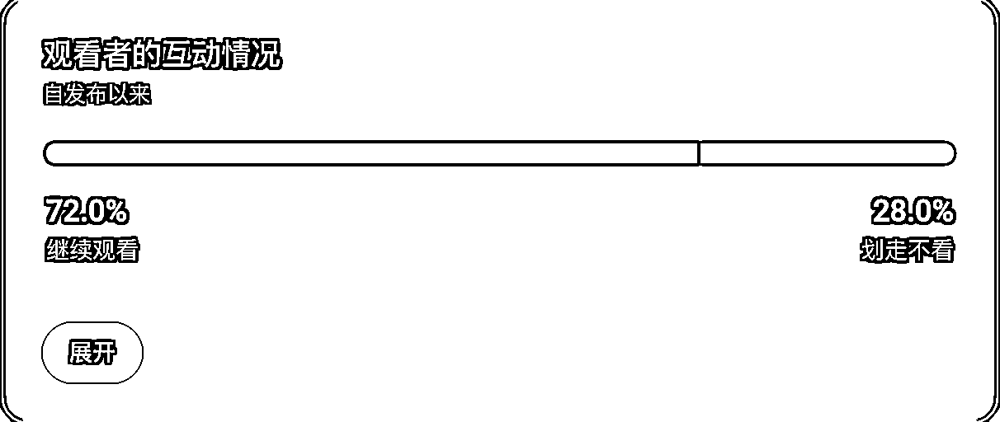
数据就是明晃晃的摆在这里，数据证明，白猫更容易让人有兴趣观看下去；所以我果断的更改了形象，把所有的视频都做成了白猫；广告里有一个“视觉记忆”的专用词，意味着人们对这个形象已经悉知，所以每一次看到某个东西都会潜意识的勾起其他记忆；白猫形象也是如此，非常的顶级账号都在用这个相同的形象制作不同有趣的内容，这个形象已经有过接近50亿（赛道容量）的曝光，所以为什么别人大费周章花费那么多力气和心血来打造的IP，我们不借呢，又没有所谓的版权！！ 金枪大叔有一本书《借势》，做短视频的可以看看，会大有收获的。
总结：要不停的做测试，来确保你的视频制作是在正确的轨迹上运转的，一个视频的成与否不要紧，因为只要你坚持你就会爆，但是一定要在正确的轨迹上，这样能减少你的弯路；要多做测试，要清楚你的地区群众到底喜欢什么形象/角色。做测试是为了节省未来可能会错付的更多成本。
这是我转变成白猫之后大爆的视频：https://youtube.com/shorts/RkgTjdjsmxM
这个视频很关键，因为它证实了我转化形象这一步的正确，突破了4000w播放，单个视频获得5w粉丝
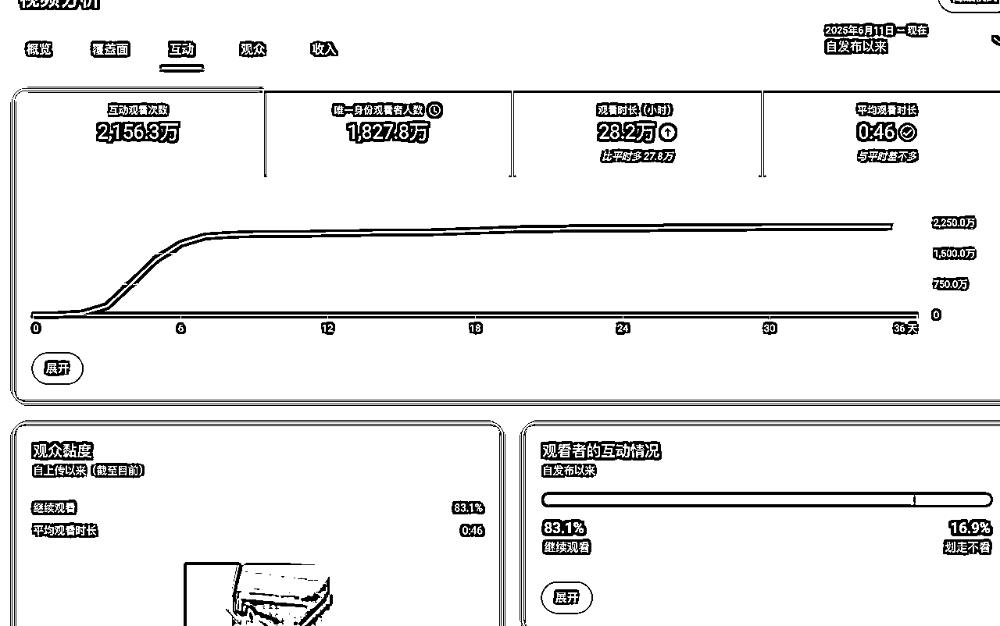
下面这张图片是整个视频的亮点和最后的反转设计：
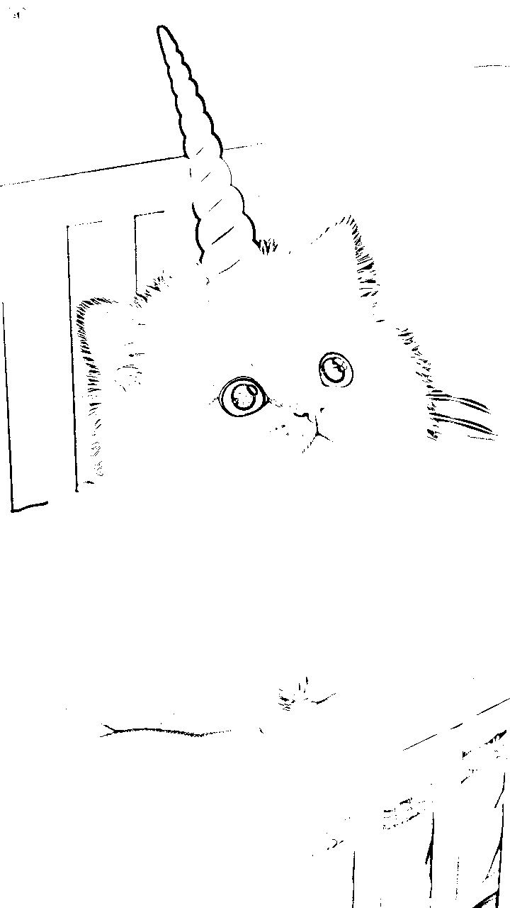
但是我这个灵感是从哪来的呢---------就是看其他的AI图片的网站，最有代表性的是sora，以下是sora网站的原图片：
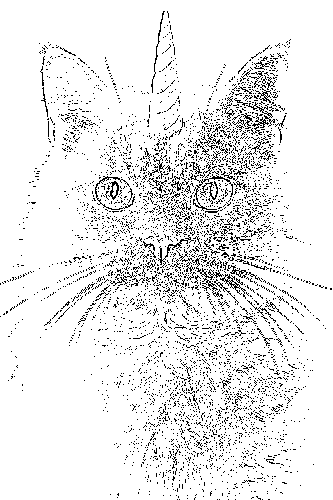
我养成一个习惯就是看到好的作品都会保存下来。
这是sora的官方，因为sora本身图片和视频生成器，而它的网页简直就是一个创意市集！！！！！很多人都忽视了，上面有非常非常非常多的创意可以借鉴。而且Sora这个AI视频模型的目标非常明确，就是想要制作病毒式传播的东西，所以它的创作者作品都很符合短视频逻辑。
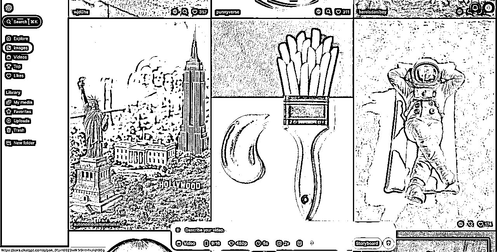
而且你如果有时候你看到一些有趣的图片而且点赞量很大，那你可以大胆的微创新一下融入到你自己的视频里，因为这也就意味着这个创意已经被小规模认可和喜欢了，所以更接近大众。
随着我制作的视频越来越多，数据参数也越来越充分，可以分析的数据也越来越多，我得出了一个逻辑：爆款视频来自另一个爆款视频；起因是前两天深海圈的4组风向标小组在开会，然后李队长在开会的时候一句话点醒了我，他说“爆款的模板稍微改一下发出还是流量很好”，听到这句话我茅塞顿开，结合了前两天教练跟我说的一句“视频千千万，爆款就那几个”；
经过这几天的测试，我提炼出了一套自己的爆款模型，这里简称为“20%爆款原则”，为什么叫这个名字，请看我往下说。
首先必须承认，白猫这个形象是个双刃剑，有坏的一面也有好的一面；坏的是 视频太多了，能刷到非常多的同类型视频，而且都是翻拍；好的一面就是不需要进行教育，因为观众对于这个形象非常熟悉，所以如果你的画质更好，大家更愿意做停留；所以我的结论是，如果大家非常有信心，就想做到金字塔尖，那可以用闯这个赛道，但是怎么闯！！我觉得我的“20%爆款原则”可以帮助你；
这个赛道不是所有的爆款都是爆款，有时候你会发现一个很有趣的现象；就是你完完整整的复刻了对标的爆款视频，即便复刻到95%，画面节奏完全一致，但是还是完全不推流。是的，这个很正常，因为算法的推流机制不是完全的精准，换句话说，算法不一定会将你的视频推流给他的观看用户或粉丝，而实际给你推流那些观众又不一定爱看。。（即便你做到95%的复刻）；所以我得出了一个理论：supercatpapa只有一个就足够了，因为会看supercatpapa的一定用户一定不会去看其他的，所以你要制作和他有剧情差别的赛道；再讲深入一点，supercatpapa是做：极致真实+趣味+亲情；基本所有的视频都是围绕这三个框架，所以我在我的频道中加入了另外一个元素“奇幻”作为差异化；例如独角兽、美人鱼等等元素。所以当想清楚了自己想要加入什么元素之后，应该怎么做？
第一阶段的“20%”：复刻对标的视频保留80%的剧情、画面、节奏、场景。剩余的20%用于大胆的创作加入你自己的元素，制作出你自己的爆款；这个是第一阶段 最为保险但其实也是最费劲的一个阶段，因为这个阶段属于所有的东西你要自己重新制作成你自己的东西。而且你需要不停的测试；因为每一个微创新的视频，都可能成为你的下一个爆款模板，但是你需要大量的看同类的账号（这里特别提醒，特别注意和要经常看低粉丝高播放的同类账号视频，因为这类账号的爆款意味着完全被市场验证过，爆的几率更多；而一上来就去找高粉丝高播放的视频，我踩过这个坑，这里展开说说吧。。。因为很多人都问过这个问题也有同样的经历，好帮大家避坑）这个视频是我之前对标的一个视频：https://youtube.com/shorts/As4yvEu-Zng?si=UfUY__ntF144StuZ；但是在我认知里，这个视频完全不过关，首先前3秒就留不住人，非常单调，而且剧情的走向也很普通，只有一个反转，除了画面精美之外，这个视频在我眼里完全不合格；可是它居然就是达到了快一个亿的推流，所以我抱着尝试的心态，但是做完确实崩了，这个是我的视频：https://www.youtube.com/shorts/V7m1KzEsuFU，看下面的数据，直接血崩；所以不要去尝试复刻高粉的爆款视频，因为他的粉丝用户模型和你的账号模型完全不一样，可能会导致下面的情况。）
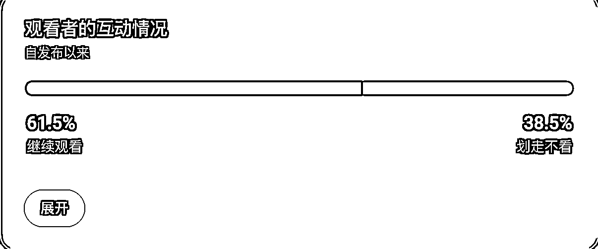
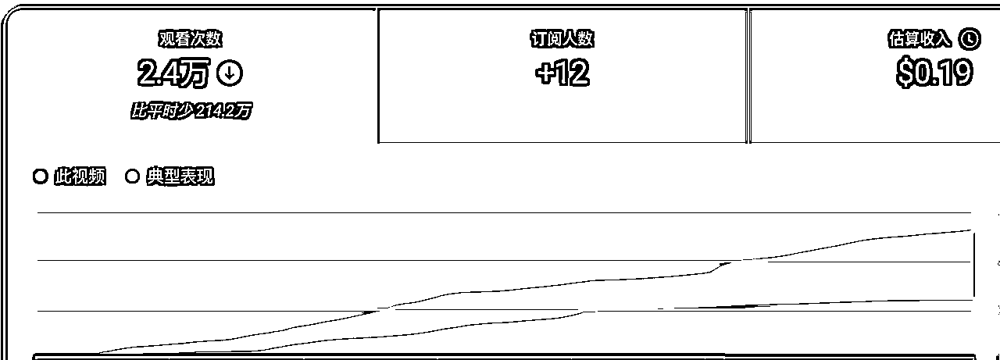
ok，继续刚刚说看大量的同类账号，看完同类账号可以把相应你自己频道元素的人物或者剧情结合到你的视频，但是只要20%；从而做出你自己的“第一批爆款模板”，没听错，我们要的是一批！！起码要有2-3个。
第二阶段的“20%”：这个就是我这个方法论最强的地方，你直接拿你爆款模板进行改！！但是一样只要修改20%，其他的画面甚至不要动，时长不要动，只改某个人物或者某个生物即可。废话不多说，我直接上数据案例：
这是我第一个阶段的第一个爆款：https://youtube.com/shorts/RkgTjdjsmxM
数据如下：
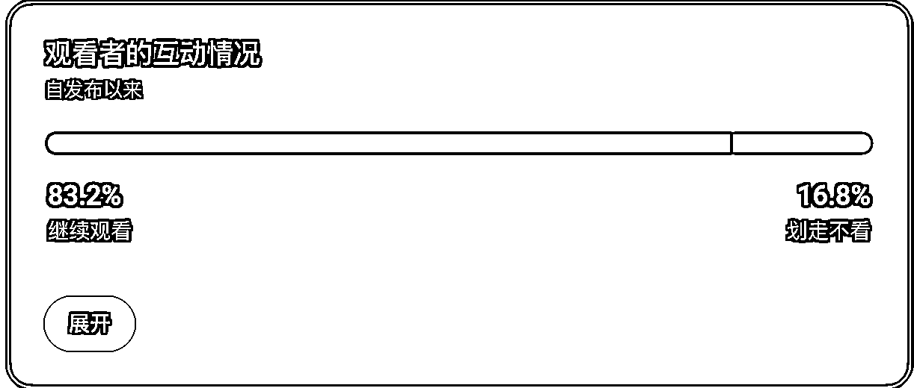
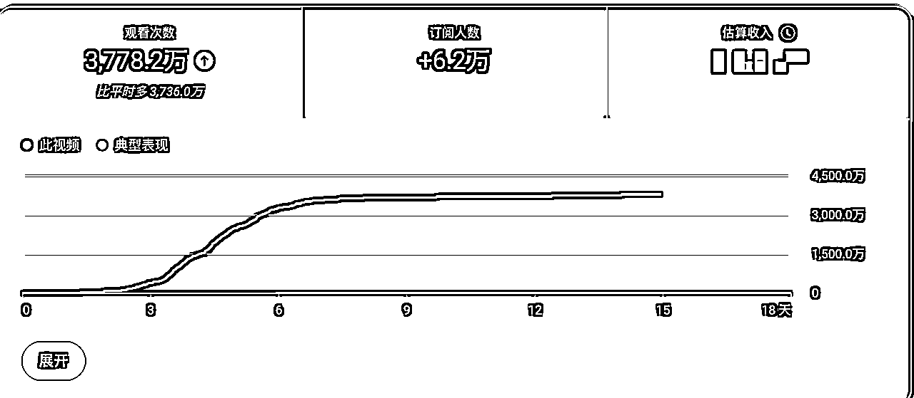
然后我按照20%的修改之后，这个最新的视频：https://youtube.com/shorts/7Y2wda1iHnI
数据如下：
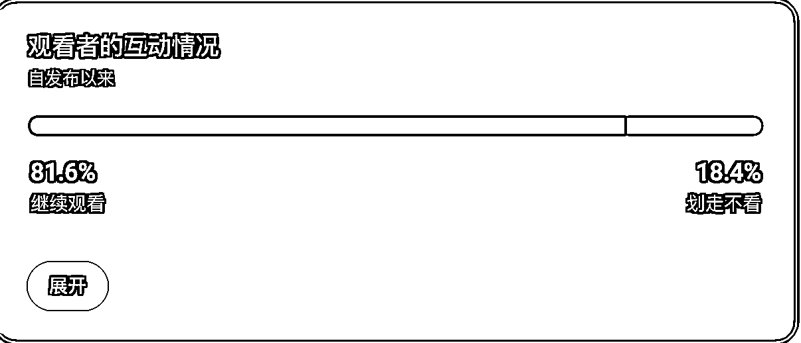
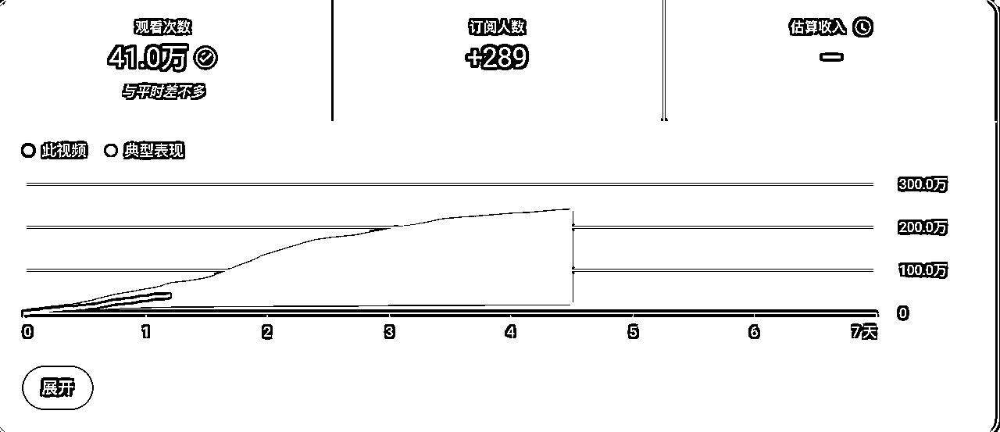
因为最新的视频是昨天刚刚发布，所以还没开始跑，但是这个已经具备了爆款的属性，无论是继续观看、平均停留时长都可以成为爆款，接下来就让子弹飞一会。
这个地方我再提一下反面教材，我根据这个模板制作的另一个视频：https://youtube.com/shorts/r-5U4esuEdE
这个视频的数据就很差了：
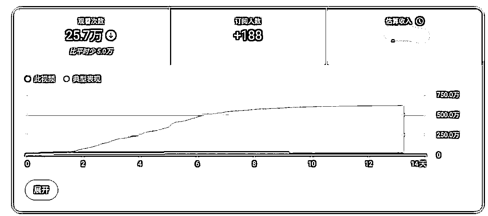
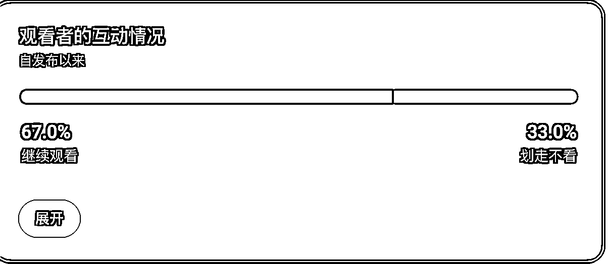
我自己的复盘总结是：改的太多了，我改了被救人物、营救人员、营救场景、剧情走线、画面场景等等，已经超过20%接近50%左右了；所以为什么我说这个方法论叫“20%爆款原则”；因为改的越多，可控性越低。所以尽量在20%左右是较为可靠的数据结论。
所以通过上面的“20%爆款原则”数据测试，我的结论是：你的爆款改动20%之后还是爆款。
虽然在之前你要经过第一阶段测试大量的数据做铺垫和锻炼自己的制作能力，而且让推流系统精准捕捉到你的观众，但是之后你可以一直利用这个模式，最大化的增加爆款几率；当然，这个模式不是一直有效，无论什么样的爆款模板只要模仿的人越来越多，肯定观众也会出现视觉疲劳从而推流效果也会减弱；所以做短视频一定要具备制作爆款和复制爆款的能力，让你复刻对标也是为了让你深度学习和思考；当你学会深度思考之后你才能为你的频道持续带来爆款视频。要多学习，多观察，精品视频的魅力和壁垒在于你一定要制作出工作流无法制作出来的视频质量，所以需要你对视频剧情和节奏有深刻的理解。
我先把这三个点掰开了揉碎来说：
首先还是分析一个supercatpapa：https://www.youtube.com/@SuperCatPapa
这个账号大家最熟悉：
首先说极致真实化：
大家可以看它最火的三个视频：
https://www.youtube.com/shorts/v5PptkZPTxY
https://www.youtube.com/shorts/nLxpM7Rzn6I
https://www.youtube.com/shorts/bGNdE6ojxk4
最火的一个视频可以推流1.5亿，因为他把制作火腿的过程详细的呈现出来：他把一件生活中可能人们都不太会做的事情但是用小猫视频的形式展示出来，这个是一个很讨巧的出发点，因为现实中我们肯定很少会自己动手做烤肠；特别是手工的过程，首先这个就是看点一；像第二个视频的制作鳄鱼皮、老虎皮都是，用详细的制作过程来呈现我们现实中可能都不太会做的事情但是它又是真实的事情，所以制作过程越详细，越真实；“继续观看”越稳固。
其次趣味性：
我经过非常 多准确的计算，故事视频的前三秒一定要有三个镜头，平均每秒一个；大家如果去看我的视频就知道了，第一个镜头（1秒）肯定都是猎奇，第二个镜头或者第三个镜头如果可以是趣味（笑声）这种，这种视频的大基调就有可能存在大火；我指的大火是千万到亿的级别推流；因为快乐是短视频的核心内容；所以如果你能在前三秒就最直接的给人们带来欢乐，那意味着这个视频的传播性更广，任何人看你的视频都会快乐；这就成为你视频的流量密码；我之前不太相信，我觉得只要开头够惊艳或者炮火一顿炸肯定就能火；后来发现不是，这些都低于“趣味”；（这个也是我目前账号的瓶颈，都缺少了一些趣味性，更多在于紧张和刺激感，但是感官的刺激一般只会吸引到特定的年轻人群体，无法波及更多，试想你是个印度人，你上一天班了，你回家就想安安静静的躺一会，被动的接受快乐，那你会去看战争片吗？）虽然说这个逻辑很简单，但实践很难，真的很难；但只要你有想法，你就可以创造奇迹，这就是AI视频制作的魅力。
短（一般40s以内）：
视频要短！！！千万要短！！！一个60s短视频如何可以在30秒讲完，那就争取在29秒！！多一秒就会流失一群观众。这真的是我的血泪史，一样的给大家看两个视频吧。。
这两个视频都是我做的，第一个视频54秒，第二个视频47秒；虽然他们之间只差了7秒！！但是请看下面的数据：
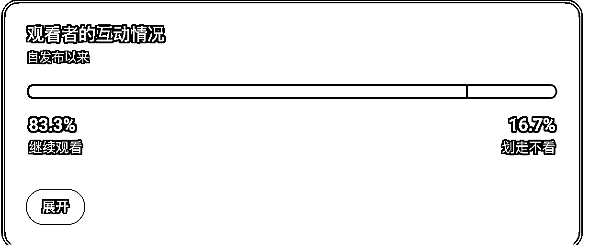
你没看错，就是这么夸张！！ 第一个视频变成了垃圾，第二视频变成了爆款。短视频要的不是逻辑通畅，而是要观众神经通畅，只要他们“爽”就行了；不需要解释什么东西哪里来的，只有“它”先来了，观众才会想看到“它”怎么来的。
而且继续观看是一个非常重要的指标，如果你想做爆款一定要非常关注这个数据，只有这个数据达到80%以上，才可能成为千万甚至上亿播放的爆款。
为什么叫微创新，因为视频千千万，爆款模板永远就那几个；所以你要在爆款的基础上进行创新，不要凭空想象，我真的在上面吃过很多亏，我是一个比较有想法和比大胆的人，所以我制作了很多拉的视频，因为我太相信自己的“感觉”；我制作完自己觉得很爽，可是观众不买单；所以一定要基于现有的爆款模板去拆解和微调，我建议微调程度不要高于40%，这个就看你个人功力了。我之前基本都是50-70%，后来被教练骂了一顿，骂醒了。
所以我给大家一个建议，一定要多看风向标，要非常清楚用户这段时间喜欢看什么，风向标的意义在于你能够很敏锐的捕捉到现在用户的兴趣点，甚至有一个更赖的办法；你把风向标里的所有评论，复制给gpt，然后让gpt分析用户到底喜欢什么，然后你来反推，给观众他们想看到，把他们想看的东西元素加入到你的视频里。你是一个短视频创作者，永远不要忘记你是服务于用户的，了解用户是你在制作视频之前的第一步。
我说下我最近在做的优化策略：
我每个发的视频都会先收集几万左右的观看，然后我会先看数据，看看继续观看和停留时间。
如果继续观看非常烂；那我会尝试先优化三秒（当然前提是你对后面的内容有信心）；
然后再发一次；
这是我发的一个视频https://youtube.com/shorts/WYhj1RgEbQU
播放数据如下：
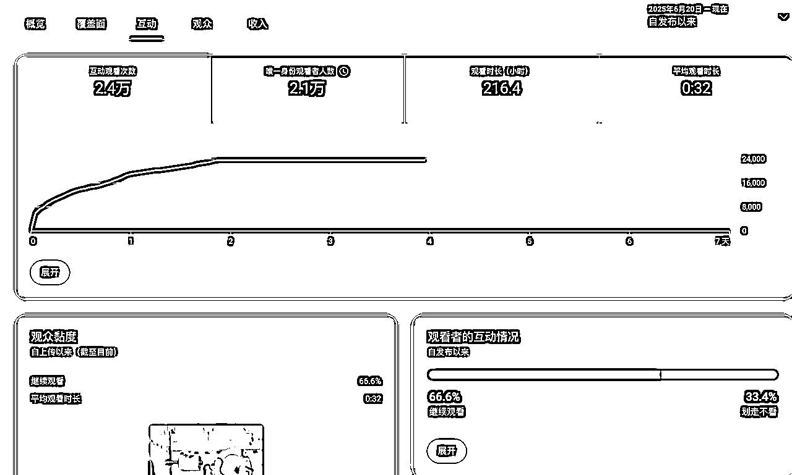
这是我优化完发出的第二个视频：
https://youtube.com/shorts/AsXeDwO2kBQ
数据如下：
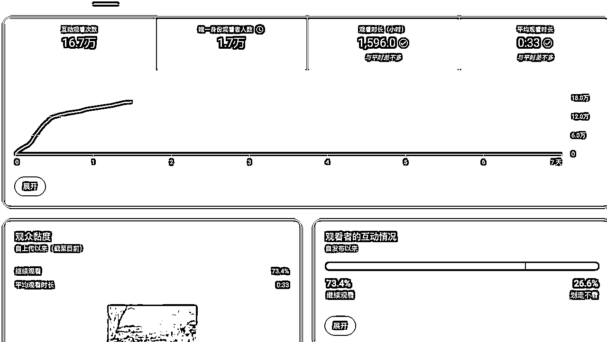
这个策略比较好的一点的锻炼你的网感和尽可能的降低成本（废片率）；所以如果你对你的内容有足够的信心，你可以测试完之后进行优化，当然我不是每一次都优化成功；这个就需要看每个人都功力，有的视频只有60%的继续观看，我就直接放弃了，因为有些死马就是死马，没办法当活马医，你继续去做下一批马就行了。
最后和大家聊一点真心：
我在深海圈比较出名。。因为我之前在深海圈发过一个视频，大家都很惊艳。
https://youtu.be/flX1Mjq72oU
https://youtu.be/BDskC5x1EdA
上面这两个是我做的长视频
当然首先制作很精良，很花成本，无论是金钱时间精力。
然后圈友问我说这个视频花了多少钱，我在群里如实的说“350-400左右”；然后大家就都知道我了，觉得我像“敢死队”，敢这么砸钱做视频。可能你也是这么看我的，但你先听我讲：
为什么投入“大量”金钱：随着AI的发展，大家肯定感知到了，veo3解决了AI的真实问题，做到了语音同步；然后海螺02解决了物理计算的大问题，这意味着；接下来的AI的进步每一次都是会突破现在所有的难题，也就是说现在我们制作AI视频的难题肯定会慢慢的被解决，只需要某个模型的一次升级就完全解决了；那换个角度，这就意味着视频创作的门槛越来越低；只要是人，那么他输入prompt提示词就可以制作完美的画面出来；AI的升级只会让prompt提示词的使用难度降低，那如果越来越多的人开始都可以利用AI制作短视频，那请问你的优势是什么？这个是我一直深思的问题；
在这里我给先给出我的答案，“先发优势”；为什么我要比别人投入更大的金钱和精力；因为只有这样，我才可以先一步抢到粉丝；虽然AI在进步，但我也在进步；我先一步抢到粉丝，这样其他人入场的时候，我的粉丝盘已经稳固才不会轻易被抢走，当别人入局的时候，虽然他的画面和我的画面一模一样的精美，但是他的粉丝几百个，我的粉丝几十万个，那这就是我的第一个优势了；前面提到了微创新：为什么要微创新，能爆火的最终答案一定是你提供了这个赛道用户从别人那看不到的，或者你做到赛道最好的；“稀缺性”，而长期的制造这种稀缺性才能成为你的IP护城河，才能渗透观众的记忆点；才让用户看到你的水印的时候会更有意愿想停留，因为看到你的水印就意味着他心里知道你的内容有“独特的趣点”；因此我得出这样的结论：那些慢慢花长时间低成本来做视频的，最终都会被那些愿意花金钱做优质视频的人抢走用户；因为你花的钱越少说明你的视频替代性更高，基本上人都能做；如果你愿意花钱才有可能做出更优质的东西出来，AI视频的模型真的是一分钱一分货。我们在这个时代，什么都是明码标价的；为什么我像“敢死队”，但其实因为我敢死，所以我一个多月就拿到了别人拿不到的成绩，而且我也已经回本了；在现在这个AI大革命的时间线上，时间就是一切，你早一个月拥有10w粉丝，你就更有能力抵抗下次AI升级带来的风险；因为每一次AI的升级都意味着你拥有了更多竞争对手，无论是人是鬼，甚至有时候你的竞争对手是数不尽的AI工作流；所以拥有了粉丝就有了先发优势，就有了以后的竞争力，但是你也要不停的进步给观众带来精品内容，你要带来和别人不一样的内容；别问为什么你的视频没爆，因为你的视频不够优质不被用户认可；Youtube很现实，你可能做了一个优质视频没爆，确实运气不好，但你如果连续做了50个优质视频，你就能火；就这么简单。
想象一下你是一名黑客；你的作品和你的账号就是你的代码，你黑入的是观众的大脑神经；换个角度 你会觉得你的工作很有意思。